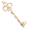

Music
SoundCloud Playlist
Unityゲーム
VEGORA ENDLESS
ロボットの「helper」が様々な場所の放棄されたロボットを倒し、部品を集め、自身を強化しながら進むゲーム。果てしなく続く危険地帯にどこまで挑めるか？
- ジャンル: 2D / シングルプレイ / アクション
- VEGORA ENDLESSをプレイ (v02)
(新) Key Or Trap
現在改修中のマルチプレイ対応ボードゲーム。
- ジャンル: 2D / マルチプレイ / ボードゲーム
- KeyOrTrap (test) - KeyOrTrapをプレイ (vb01)
- ルール修正中
- コスト計算ツール
(旧) Key Or Trap
マス効果を自由に配置可能なマルチプレイすごろくゲーム。
- ジャンル: 2D / マルチプレイ / ボードゲーム
- KeyOrTrapをプレイ (v21)
- ルール
修正項目
v21:解読機の削除
v20:解読機&スキル調整
エンチャント一覧
効果マスに対する副次的な効果で、このマスに効果があるときにのみ効果がある。
| 強制停止 | このマスに効果があるとき、通過しようとしたプレイヤーは強制的に停止し効果を受ける このマスの再配置時間は(変更)5周。 |
|---|
アイテム
解放アイテム
 |
1 の鍵 | スキル:1の宣言を解放する。ダイスを振らず、1を宣言でき、移動しない（1つ消費) |
|---|---|---|
| 2 の鍵 | スキル:2の宣言を解放する。ダイスを振らず、2を宣言でき、移動しない（1つ消費) | |
| 3 の鍵 | スキル:3の宣言を解放する。ダイスを振らず、3を宣言でき、移動しない（1つ消費) | |
| 反転 の鍵 | スキル:方向反転を解放する。異変このターンの移動時、進行方向を反転させる(1つ消費) | |
| 抑制 の鍵 | スキル:抑制力を解放する。 次の移動が2マス減少する(1つ消費) |
(+追加)
| ダイス の鍵 | スキル:ダイスを解放する。ダイスを降って進む。 | ||
|---|---|---|---|
| 放電 の鍵 | スキル:放電を解放する。指定マスのエンチャントを消す。 | Itemマス、鍵鋳造キット、Traderマス | |
| 経過 の鍵 | スキル:時間経過を解放する。 全てのマスの再配置時間が3周進む。 | Itemマス、鍵鋳造キット、Traderマス |
イベント
mysteryイベント
(変更)mysteryイベントの開始に新たなスライドを追加、その選択肢によって行うイベントが変わる
(変更)トレイダー、ランダムアイテムイベントへ分岐可能に(固定の選択肢)
(変更)3つ目（マイク取得でそれ以上）の選択肢には、ランダムイベント（今までのミステリーイベントでランダムに出現していたもの）が追加される
新たなランダムイベント
- (+追加)イベント「なんでも守れる金属」
イベント通過で金属の塊が獲得ができるイベント